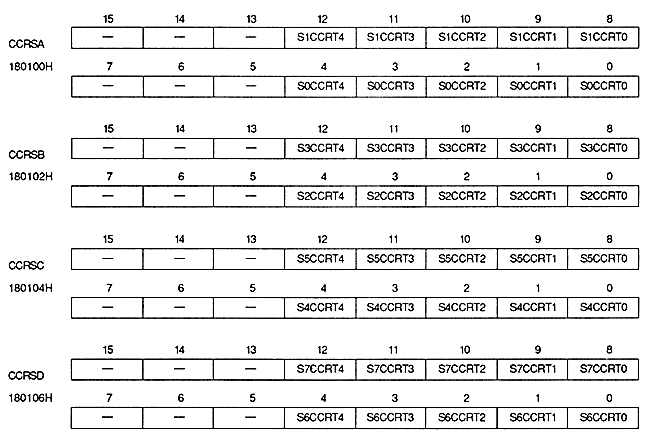

The higher the priority number, the higher the display priority. Sprite characters that use registers with a priority number set to 0 are considered transparent and are not displayed.
Color calculation ratio register
Color calculation ratio register specifies the color calculation ratio. This is a write-only 16-bit register located at addresses 180100H to 180106H. The value is cleared to 0 after power-on or reset, so be sure to set it.

Color calculation ratio bit (for sprites) : Sprite color calculation ratio bit
(S0CCRT4 to S0CCRT0, S1CCRT4 to S1CCRT0, S2CCRT4 to S2CCRT0, S3CCRT4 to S3CCRT0, S4CCRT4 to S4CCRT0, S5CCRT4 to S5CCRT0, S6CCRT4 to S6CCRT0, S7CCRT4 to S7RT
Specified color calculation ratio of sprite. The color calculation ratio is for 1/32 times the RGB color data.